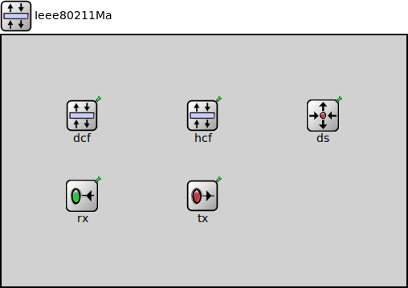

Package: inet.linklayer.ieee80211.mac
Ieee80211Mac
compound moduleImplementation of the 802.11b MAC protocol. This module is intended to be used in combination with the ~Ieee80211Radio module as the physical layer.
Encapsulation/decapsulation must be done in the upper layers. (It is typically in the 802.11 management module, see in ~Ieee80211Interface). The base class for 802.11 frame messages is ~Ieee80211MacHeader, but this module expects ~Ieee80211DataOrMgmtHeader (a subclass) from upper layers (the management module). This module will assign the transmitter address (address 2) and the frame sequence number/fragment number fields in the frames; all other fields must already be filled when this module gets the frame for transmission.
Power management and polling (PCF) are not supported.
Physical layer algorithms such as frequency hopping and direct sequence spread spectrum are not modelled directly.
Fields related to the above unsupported features are omitted from management frame formats as well (for example, FH/DS/CF parameter sets, beacon/probe timestamp which is related to physical layer synchronization, listen interval which is related to power management, capability information which is related to PCF and other non-modelled features).
Usage diagram
The following diagram shows usage relationships between types. Unresolved types are missing from the diagram.
Inheritance diagram
The following diagram shows inheritance relationships for this type. Unresolved types are missing from the diagram.
Extends
| Name | Type | Description |
|---|---|---|
| MacProtocolBase | simple module |
Module base for different MAC protocols. |
Parameters
| Name | Type | Default value | Description |
|---|---|---|---|
| interfaceTableModule | string | ||
| mibModule | string | ||
| modeSet | string | "g(mixed)" | |
| fcsMode | string | "declared" | |
| initialRadioMode | string | "receiver" | |
| mtu | int | 2304B | |
| qosStation | bool | false |
Properties
| Name | Value | Description |
|---|---|---|
| display | i=block/layer | |
| class | Ieee80211Mac |
Gates
| Name | Direction | Size | Description |
|---|---|---|---|
| upperLayerIn | input | ||
| upperLayerOut | output | ||
| lowerLayerIn | input | ||
| lowerLayerOut | output | ||
| mgmtIn | input | ||
| mgmtOut | output |
Signals
| Name | Type | Unit |
|---|---|---|
| modesetChanged | inet::physicallayer::Ieee80211ModeSet | |
| linkBroken | inet::Packet |
Statistics
| Name | Title | Source | Record | Unit | Interpolation Mode |
|---|---|---|---|---|---|
| packetDropOther | packet drops: other | packetDropReasonIsOther(packetDropped) | count, sum(packetBytes), vector(packetBytes) | none | |
| packetDropNotAddressedToUs | packet drops: not addressed to us | packetDropReasonIsNotAddressedToUs(packetDropped) | count, sum(packetBytes), vector(packetBytes) | none | |
| packetDropDuplicateDetected | packet drops: duplicate detected | packetDropReasonIsDuplicateDetected(packetDropped) | count, sum(packetBytes), vector(packetBytes) | none | |
| packetReceivedFromUpper | packets received from upper layer | count, sum(packetBytes), vector(packetBytes) | none | ||
| packetReceivedFromLower | packets received from lower layer | count, sum(packetBytes), vector(packetBytes) | none | ||
| packetDropQueueOverflow | packet drops: queue overflow | packetDropReasonIsQueueOverflow(packetDropped) | count, sum(packetBytes), vector(packetBytes) | none | |
| packetDropRetryLimitReached | packet drops: retry limit reached | packetDropReasonIsRetryLimitReached(packetDropped) | count, sum(packetBytes), vector(packetBytes) | none | |
| packetSentToLower | packets sent to lower layer | count, sum(packetBytes), vector(packetBytes) | none | ||
| packetSentToUpper | packets sent to upper layer | count, sum(packetBytes), vector(packetBytes) | none | ||
| linkBroken | link breaks | count, vector? | none | ||
| packetDrop | packet drops | packetDropped | count, sum(packetBytes), vector(packetBytes) | none | |
| packetDropIncorrectlyReceived | packet drops: incorrectly received | packetDropReasonIsIncorrectlyReceived(packetDropped) | count, sum(packetBytes), vector(packetBytes) | none |
Source code
// // Implementation of the 802.11b MAC protocol. This module is intended // to be used in combination with the ~Ieee80211Radio module as the physical // layer. // // Encapsulation/decapsulation must be done in the upper layers. (It is // typically in the 802.11 management module, see in ~Ieee80211Interface). // The base class for 802.11 frame messages is ~Ieee80211MacHeader, but this // module expects ~Ieee80211DataOrMgmtHeader (a subclass) from upper layers // (the management module). This module will assign the transmitter address // (address 2) and the frame sequence number/fragment number fields in the // frames; all other fields must already be filled when this module gets // the frame for transmission. // // <b>Limitations</b> // // Power management and polling (PCF) are not supported. // // Physical layer algorithms such as frequency hopping and // direct sequence spread spectrum are not modelled directly. // // Fields related to the above unsupported features are omitted from // management frame formats as well (for example, FH/DS/CF parameter sets, // beacon/probe timestamp which is related to physical layer synchronization, // listen interval which is related to power management, capability information // which is related to PCF and other non-modelled features). // module Ieee80211Mac extends MacProtocolBase like IIeee80211Mac { parameters: string mibModule; string modeSet @enum("a","b","g(erp)","g(mixed)","n(mixed-2.4Ghz)","p","ac") = default("g(mixed)"); string fcsMode @enum("declared","computed") = default("declared"); string initialRadioMode @enum("off","sleep","receiver","transmitter","transceiver") = default("receiver"); int mtu @unit(B) = default(2304B); bool qosStation = default(false); *.mibModule = default(absPath(this.mibModule)); *.rxModule = "^.rx"; *.txModule = "^.tx"; @display("i=block/layer"); @class(Ieee80211Mac); @signal[linkBroken](type=inet::Packet); // TODO this signal is only present for the statistic to pass the signal check, to be removed @signal[modesetChanged](type=inet::physicallayer::Ieee80211ModeSet); @statistic[packetSentToUpper](title="packets sent to upper layer"; record=count,sum(packetBytes),vector(packetBytes); interpolationmode=none); @statistic[packetSentToLower](title="packets sent to lower layer"; record=count,sum(packetBytes),vector(packetBytes); interpolationmode=none); @statistic[packetReceivedFromUpper](title="packets received from upper layer"; record=count,sum(packetBytes),vector(packetBytes); interpolationmode=none); @statistic[packetReceivedFromLower](title="packets received from lower layer"; record=count,sum(packetBytes),vector(packetBytes); interpolationmode=none); @statistic[linkBroken](title="link breaks"; record=count,vector?; interpolationmode=none); @statistic[packetDrop](title="packet drops"; source=packetDropped; record=count,sum(packetBytes),vector(packetBytes); interpolationmode=none); @statistic[packetDropIncorrectlyReceived](title="packet drops: incorrectly received"; source=packetDropReasonIsIncorrectlyReceived(packetDropped); record=count,sum(packetBytes),vector(packetBytes); interpolationmode=none); @statistic[packetDropNotAddressedToUs](title="packet drops: not addressed to us"; source=packetDropReasonIsNotAddressedToUs(packetDropped); record=count,sum(packetBytes),vector(packetBytes); interpolationmode=none); @statistic[packetDropQueueOverflow](title="packet drops: queue overflow"; source=packetDropReasonIsQueueOverflow(packetDropped); record=count,sum(packetBytes),vector(packetBytes); interpolationmode=none); @statistic[packetDropRetryLimitReached](title="packet drops: retry limit reached"; source=packetDropReasonIsRetryLimitReached(packetDropped); record=count,sum(packetBytes),vector(packetBytes); interpolationmode=none); @statistic[packetDropDuplicateDetected](title="packet drops: duplicate detected"; source=packetDropReasonIsDuplicateDetected(packetDropped); record=count,sum(packetBytes),vector(packetBytes); interpolationmode=none); @statistic[packetDropOther](title="packet drops: other"; source=packetDropReasonIsOther(packetDropped); record=count,sum(packetBytes),vector(packetBytes); interpolationmode=none); gates: input mgmtIn; output mgmtOut; submodules: dcf: <default("Dcf")> like IDcf { parameters: @display("p=100,100"); } hcf: <default("Hcf")> like IHcf if qosStation { parameters: @display("p=250,100"); } ds: <default("Ds")> like IDs { parameters: @display("p=400,100"); } rx: <default("Rx")> like IRx { parameters: @display("p=100,200"); } tx: <default("Tx")> like ITx { parameters: @display("p=250,200"); } }File: src/inet/linklayer/ieee80211/mac/Ieee80211Mac.ned
 This documentation is released under the Creative Commons license
This documentation is released under the Creative Commons license